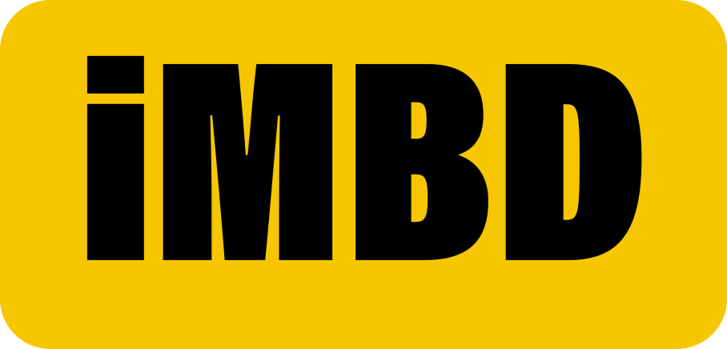

|  | Watchlist | Sign In |
|
Discussion : Is among us the greatest game ever created?
Among Us is a 2018 online multiplayer social deduction game developed and published by American game studio Innersloth. The game was inspired by the party game Mafia and the science fiction horror film The Thing. The game allows for cross-platform play, released on iOS and Android devices in June 2018 and on Windows later that year in November. The game was ported to the Nintendo Switch in December 2020 and on the PlayStation 4, PlayStation 5, Xbox One and Xbox Series X/S in December 2021. A virtual reality adaptation, Among Us VR, was released on November 10, 2022. Among Us takes place in space-themed settings where players are colorful, armless cartoon astronauts. Each player takes on one of two roles: most are Crewmates, but a small number are Impostors. Crewmates work to complete assigned tasks in the game while identifying and voting out suspected Impostors (which appear identical to Crewmates) using social deduction, while Impostors have the objective of killing the Crewmates. While the game was initially released in 2018 to little mainstream attention, it received a massive influx of popularity in 2020 due to many Twitch streamers and YouTubers playing it and the COVID-19 pandemic. It received favorable reviews from critics on account of its fun and entertaining gameplay. The game and its stylized characters have been the subject of various internet memes. Tanvir : lol baler game. Rian : ken kharap ki. Borshon : shomudre 3 ta timi mas thake ahaha put. |